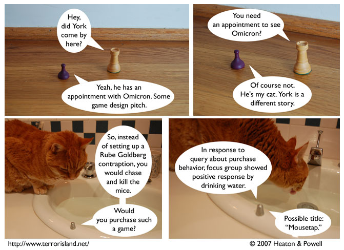

Strip #111
— Monday, February 26, 2007
Focus groups are normally a bit larger than this.
Notes, Thoughts, &c.
Ben’s Notes
I may have mentioned it here before, but Ray (the actor who portrays Omicron) actually does regularly drink from that sink. It’s as good a water bowl as anything, I suppose.
Lewis’s Notes
Sometimes I learn things when making Terror Island. Today I learned that Mousetrap was actually based directly on the drawings of Rube Goldberg. Crazy.